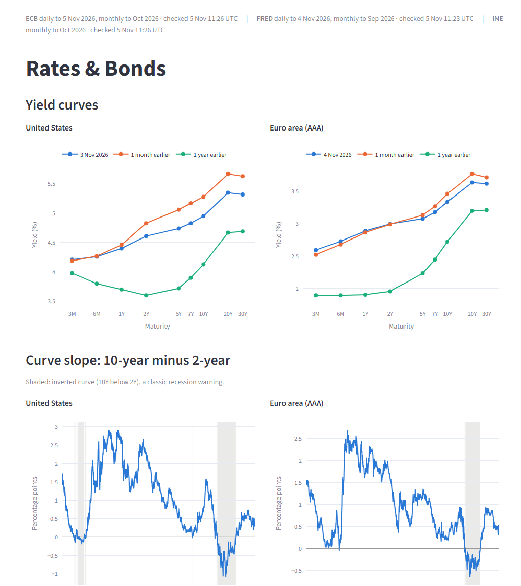

Finance · Data engineering
Macro Regime Dashboard
- Self-updating dashboard of rates, bonds, inflation, risk and markets for the US, the euro area and Spain, from the Fed, ECB and INE.
- Stores when each value became public, so the regime-rotation strategy it feeds can be backtested without look-ahead bias.
- Nightly pipeline on GitHub Actions into Postgres, 74 automated tests, live news tagged by topic.
Python · pandas · SQLAlchemy · Postgres · Streamlit · Plotly · GitHub Actions